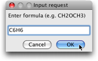
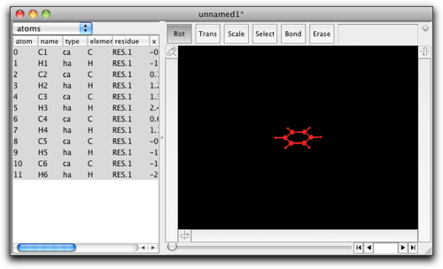
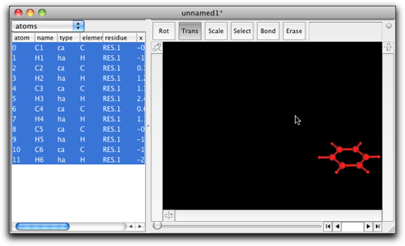
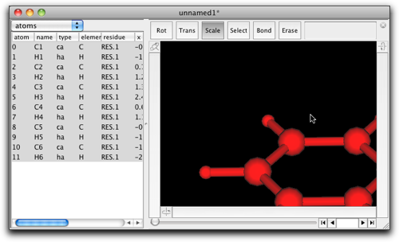

Step One: Draw a New Molecule
1. Create a Molecule
Start up Molby. You will see a blank window like below. This is the main window to manipulate your molecule.

Suppose you want a benzene molecule. Double-click on the black area, and you will be asked to "enter formula". Type "C6H6" and hit "OK".

Then you see a benzene molecule in the black area. The atoms and bonds are drawn in red, which means these atoms and bonds are "selected". On the left to this area, there is a table, which shows in numbers the positions of all atoms, and other useful information. We will get into this part in more details later.

2. Rotate the Molecule
You can rotate the molecule around by use of the three bars on the both sides and the bottom of the black area. Press the left button of the mouse on one of these bars, and try dragging.

- Bar 1: rotate the whole molecule around the horizontal axis.
- Bar 2: rotate the whole molecule around the vertical axis.
- Bar 3: rotate the selected part of the molecule. (In the present example, the whole molecule is selected, so that the bar 3 works in the same manner as the bar 2.)
Next, look at the buttons above the black area. The left-most button "Rot" is now selected. This means the window is in the "Rotation" mode. In this case, you can drag in the black area to rotate freely the whole molecule.
Note: Be careful not to start drag from a very near point to the molecule. If you start drag on a selected atom or bond, the selected part will move along the mouse, instead of the whole molecule to rotate.
3. Translate and Scale
Press the button "Trans" above the black area. The window is now in "Translate" mode. When you drag in the black area, the whole molecule moves along with the mouse movement.
Note: the functions of the rotation bars do not change.

Next, press the button "Scale". The window is now in "Scale" mode, and you can expand and shrink the molecule by dragging in the black area.

The "Fit to Screen" menu command, avaiable under the "View" menu, is a convenient way to fit the whole molecule to the window.

Now you have learned how to move the whole molecule around. In the next chapter, you will learn how to edit the molecule.